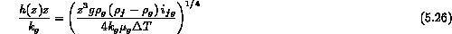
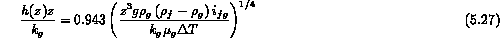
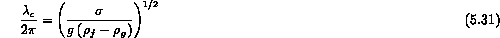

Once the critical heat flux is exceeded the heater surface is blanketed by a continuous vapor film; i.e., film boiling. Under this condition one must find the heat transfer resistance of this vapor film as well as consider the additional effect of radiation heat transfer at very high heater surface temperatures through this vapor film ( C). Bromley (1950) used the approach first developed by Nusselt for film condensation to predict the film boiling heat transfer coefficient for a horizontal tube
where  is the difference in temperature between the heater wall and the saturation temperature. Bromley also considered the film boiling heat transfer coefficient for a vertical wall.
is the difference in temperature between the heater wall and the saturation temperature. Bromley also considered the film boiling heat transfer coefficient for a vertical wall.
This simplest of solutions is obtained assuming the vapor film is laminar and that the temperature distribution through the film is linear. For a vertical flat surface various boundary conditions may be imposed:
For the first of these boundary conditions, the local heat transfer coefficient h(z) at a distance z up the surface from the start of film boiling is given by

The average coefficient h(z) over the region up to a distance z is given by:

If one defines
Note the analogy with natural convection. The values of C for the first of the above boundary conditions is 0.943 and for the second is 0.667. This thin vapor film over a horizontal surface is unstable and large bubbles form and break away. The characteristic spacing of these bubbles ( ) is determined by a balance of surface tension and gravitational forces and is given by:

where one substitutes this length scale, ( ), for the tube diameter or wall length.
The final point to discuss is what happens if one decreases the heat flux while in film boiling. Once the continuous vapor film is formed it is hydrodynamically stable even if the heat flux decreases below the critical heat flux. In fact, this hystersis effect persists until the heat flux decreases to a point where the superficial velocity of the vapor formed at the heater surface is too low to "levitate" the liquid above the "continuous" film; in fact the film oscillates substantially and this physical picture may only be qualitatively correct. Zuber (1958) developed the expression for the minimum film boiling heat flux based on the concept of minimum superficial vapor velocity in a saturated pool and resulted in
Notice that this expression is similar in form to the CHF model except the density in the velocity term is the liquid density and comes about from a force balance on vapor bubbles leaving the interface. This minimum film boiling heat flux can be combined with the heat transfer coefficient to predict the minimum film boiling for a saturated liquid pool. Note that once again it is the intersection of a horizontal stability line and the film boiling regime.
Wu (1989) considered the more complicated effects of subcooling and curved heater surfaces on the and . It was found a simple model was not found that was universally acceptable, thus one should look into this theoretical model. Dhir and Purohit (1978) developed a purely empirical fit to data for in water for steel or copper spheres. This is a widely used correlation but has limited applicability.
References